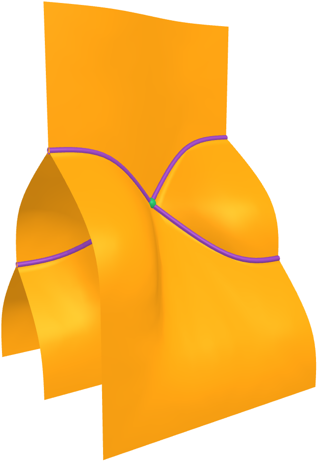

Directed higher category theory is a powerful and expressive area of mathematics, with a range of applications across computer science and physics. Computational techniques give an excellent way to learn this subject in a hands-on way that avoids much of the complexity of traditional mathematical approaches. This course is intended to be an elementary introduction to higher category theory, and there are no formal prerequisites, although previous knowledge of ordinary category theory would be helpful.
In this mini-course we will make use of two proof assistants, Catt and homotopy.io, which use very different techniques to allow us to define and compose cells in finitely-generated n-categories. The proof assistant Catt allows us to write expressions in a type theory which encode composite operations, with composition governed by combinatorial objects called pasting schemes. In contrast, the proof assistant homotopy.io is based on the graphical calculus, with all composites defined by interacting with the mouse, and output rendered as images in 2d, 3d and 4d.
The different perpsectives offered by these proof assistants give an excellent and robust understanding and intuition for higher category theory. The course is highly interactive, with plenty of activities for you to do, which we will go through in the exercise classes.
One computational model of higher categories that we do not discuss in this course is homotopy type theory, which has its own course this year given by Eric Finster. This course will have some overlap with Dan Marsden's course on string diagrams.

You will need a laptop computer to complete the activities in the exercise classes, and we will use our laptops occasionally in the lectures as well. A mouse will make the proof assistant homotopy.io easier to work with, although it is possible to use it with at trackpad (and also touch controls, with some gaps in functionality.) For the proof assistant Catt, a Linux environment will make it easier to install; if you are using Windows you could try installing Windows Subsystem for Linux.
homotopy.io. This proof assistant is available for access here: beta.homotopy.io. It is immediately available over the web, and requires no setup. There is some support for touch interaction, and a laptop trackpad works ok, but a mouse makes it much easier to use.
Catt. This proof assistant is available for download here: github.com/ericfinster/catt.io. It requires some setup. Hiccups can sometimes be encountered, so it is recommended to do this setup before the course starts. Here we provide setup instructions suitable for a Linux operating system. Note we will be using the branch "freshbranch", which includes some features we will be using in the course. The following sequence of commands works for us on a fresh Linux install, saying "yes" to any questions you are asked:
The lecture notes are available for download here. The activities for the corresponding class are given at the end of the lecture notes.